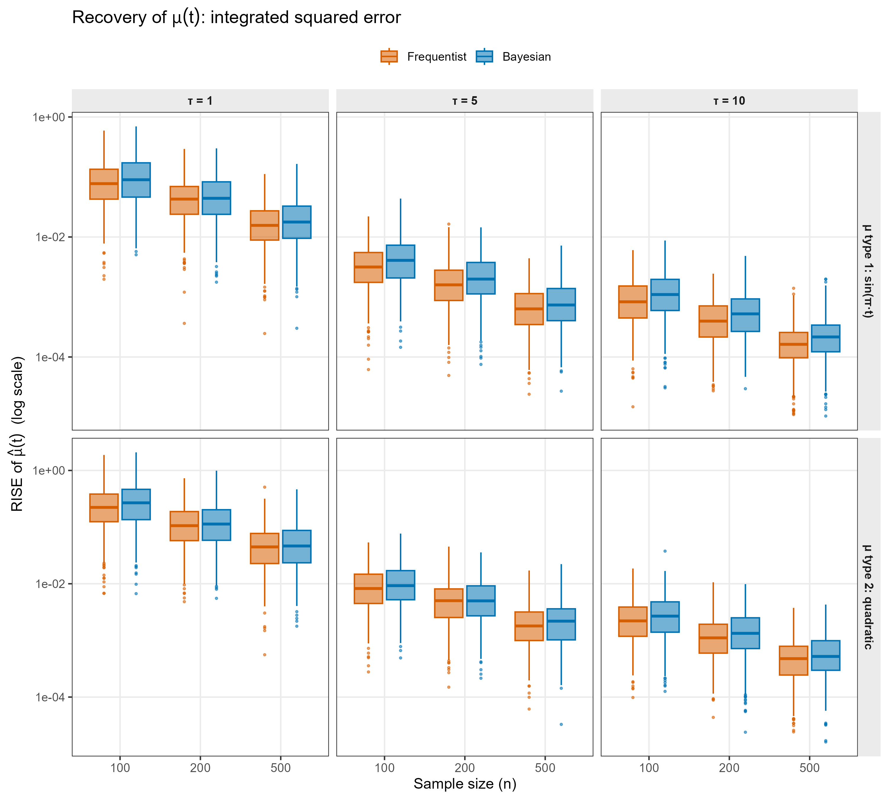
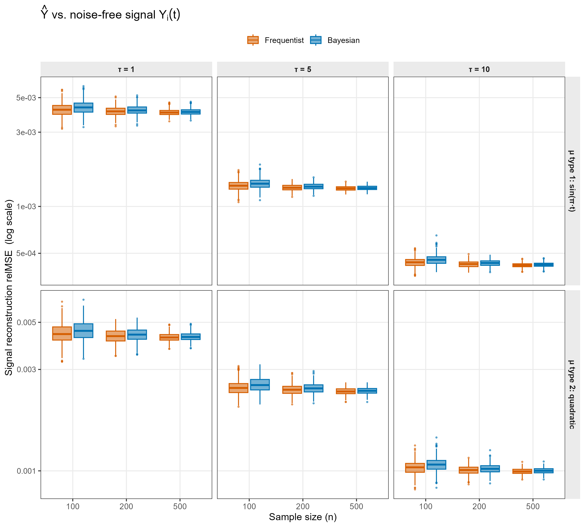

Bayesian Functional Principal Component Analysis
2026-04-20
Source:vignettes/fpca_bayes_vignette.Rmd
fpca_bayes_vignette.RmdIntroduction
This vignette provides a detailed guide to the
fpca_bayes() function in the refundBayes
package, which fits a Bayesian Functional Principal Component Analysis
(FPCA) model using Stan. Unlike the regression-style functions in the
package (sofr_bayes, fosr_bayes,
fcox_bayes, fofr_bayes),
fpca_bayes() does not relate a functional response to
predictors — it instead decomposes a sample of curves into a smooth
population mean function plus a small number of subject-specific
functional principal components, with full Bayesian uncertainty
quantification on every quantity except the eigenfunctions
themselves.
The methodology builds directly on the tutorial by Jiang,
Crainiceanu, and Cui (2025), Tutorial on Bayesian Functional
Regression Using Stan, published in Statistics in
Medicine, and reuses the same penalized-spline + Stan machinery
that powers fosr_bayes() for modelling the mean
function.
Install the refundBayes Package
The refundBayes package can be installed from CRAN:
install.packages("refundBayes")For the latest version of the refundBayes package, users
can install from GitHub:
library(remotes)
remotes::install_github("https://github.com/ZirenJiang/refundBayes")Statistical Model
The FPCA Model
For subject , let be a functional observation recorded at common grid points on a domain . The classical FPCA decomposition (Karhunen–Loève expansion plus measurement error) writes
where:
- is the unknown smooth population mean function,
- are orthonormal eigenfunctions of the covariance operator,
- is the subject-specific FPC score on the -th component, with ,
- is the variance of the -th score (the -th eigenvalue of the covariance operator),
- is the residual measurement-error variance, common across and .
The functional domain is not restricted to ; it is whatever interval the columns of the response matrix represent. The model assumes the same dense grid is observed for every subject.
Fixed Eigenfunctions from Frequentist FPCA
The defining feature of fpca_bayes() is that the
eigenfunctions
are not sampled. They are estimated once, before Stan ever
runs, by calling
init.fpca <- refund::fpca.sc(Y_mat, npc = npc)inside the function. The resulting
matrix init.fpca$efunctions is transposed to
and shipped to Stan as a data matrix called
Phi_mat. The number of components
is chosen automatically by fpca.sc() based on
percent-variance-explained when npc = NULL (the default),
or pinned by the user via the npc argument.
There are three reasons for this design choice:
- Identifiability. Treating the eigenfunctions as parameters introduces label-switching, sign-flipping, and orthogonality constraints that are notoriously hard to handle in MCMC. Fixing them resolves all three issues at once.
- Linearity in Stan. With fixed, the model becomes linear-Gaussian conditional on the variance components, which Stan can sample very efficiently using NUTS / HMC.
-
Consistency with the rest of the package.
fosr_bayes()andfofr_bayes()use the same fixed-eigenfunction trick to model the residual functional process.fpca_bayes()simply elevates that idea from “nuisance covariance” to “model of primary interest”.
The trade-off is that uncertainty in the eigenfunction estimation itself is not propagated into the posterior of the scores or the mean. In practice, when is moderately large and the eigenfunctions are well-separated (eigenvalues of decreasing magnitude with a clear gap), this is a small price for a fast and stable sampler.
Mean Function via Penalized Splines
The mean function
is represented using a penalized spline expansion identical to the one
used for the response-domain coefficient functions in
fosr_bayes():
where
are spline basis functions (B-splines by default,
).
The basis matrix
and its penalty matrix
are constructed by mgcv::smooth.construct() exactly as in
fosr_bayes(). The penalty matrix is then rescaled,
so that the smoothing parameter lives on a numerically sensible scale. This is the same scaling step used throughout the package.
Smoothness of is induced through the multivariate-normal prior implied by the quadratic penalty:
The fpca_bayes() Function
Usage
fpca_bayes(
formula,
data,
npc = NULL,
runStan = TRUE,
niter = 3000,
nwarmup = 1000,
nchain = 3,
ncores = 1,
spline_type = "bs",
spline_df = 10
)Arguments
| Argument | Description |
|---|---|
formula |
A formula of the form Y_mat ~ 1. Only the
LHS is used — the RHS is parsed but ignored, since FPCA has no
predictors. |
data |
A data frame containing the functional response
variable. The response must be stored as an
numeric matrix (one row per subject, one column per grid point),
typically wrapped with I() when assigning to the data
frame. |
npc |
Number of functional principal components. If
NULL (default), refund::fpca.sc() selects
automatically by percent-variance-explained. To pin a specific count,
pass an integer. |
runStan |
Logical. Whether to run the Stan program. If
FALSE, the function only generates the Stan code and data
without sampling — useful for inspecting the generated Stan code.
Default is TRUE. |
niter |
Total number of Bayesian posterior sampling iterations
(including warmup). Default is 3000. |
nwarmup |
Number of warmup (burn-in) iterations. Default is
1000. |
nchain |
Number of Markov chains for posterior sampling. Default
is 3. |
ncores |
Number of CPU cores for parallel execution of the
chains. Default is 1. |
spline_type |
Type of spline basis used for the mean function.
Default is "bs" (B-splines). Any mgcv basis
name is accepted. |
spline_df |
Number of degrees of freedom (basis functions) for the
mean-function spline. Default is 10. |
Return Value
The function returns a list of class "refundBayes"
containing the following elements:
| Element | Description |
|---|---|
stanfit |
The Stan fit object (class stanfit). Use
for convergence diagnostics via the rstan package. |
stancode |
A character string containing the generated Stan model code. |
standata |
A list containing the data passed to Stan (including
Phi_mat, Psi_mat, S_mat,
Y_mat). |
mu |
A matrix of posterior samples of the population mean function, evaluated on the input grid. Each row is one posterior draw; each column is one grid point. |
efunctions |
An
matrix of the fixed eigenfunctions returned by the
initial refund::fpca.sc() call. These are inputs to the
Bayesian model, not posterior samples. |
scores |
A array of posterior samples of FPC scores . |
evalues |
A matrix of posterior samples of the FPC eigenvalue standard deviations . |
sigma |
A length- vector of posterior samples of the residual standard deviation . |
family |
Always "fpca". Used for class-method
dispatch. |
When runStan = FALSE, every element except
efunctions, stancode, standata,
and family is filled with NA.
Formula Syntax
Because FPCA has no predictors, the formula syntax for
fpca_bayes() is intentionally minimal:
Y_mat ~ 1where Y_mat is the name of the matrix-valued
response column in data. This differs sharply from
sofr_bayes and fcox_bayes, where
tmat, lmat, and wmat encode the
Riemann-sum integral against the functional predictor: there is no
integral and no functional predictor here, so none of those auxiliary
matrices are required. The only requirement is that
data[[Y_mat]] is a numeric matrix of dimension
with the same grid across all subjects.
How the Data Are Auto-Processed
When fpca_bayes() is called, the function performs the
following steps internally before invoking Stan:
-
Parse the formula with
brms::brmsformula()to extract the response variable name. -
Validate that
data[[y_var]]exists and is a matrix. -
Run an initial frequentist FPCA via
refund::fpca.sc(Y_mat, npc = npc)to obtain the eigenfunction basis and the number of components . -
Build the mean-function spline basis
and penalty matrix
using
mgcv::smooth.construct()on a dummy grid1:M. The penalty matrix is rescaled so that the smoothing variance is on a numerically sensible scale. - Assemble the Stan data list containing , , , , , , , and .
-
Generate the Stan code for each block
(
data,transformed data,parameters,transformed parameters,model) and concatenate them. -
Run Stan (or skip if
runStan = FALSE) and extract posterior samples. -
Reconstruct the mean function at the input grid by
computing
for every posterior draw of
,
so the user receives
mualready evaluated at the observed time points.
The user therefore needs to supply only Y_mat ~ 1 and a
data frame with a matrix-valued response. No basis construction, no FPCA
pre-fit, and no centering are required from the caller.
Example: Bayesian FPCA on Simulated Data
We demonstrate fpca_bayes() using a small simulated
example with a known true mean function, two true eigenfunctions, and
known noise variance, so that posterior recovery can be checked against
the truth.
Simulate Data
set.seed(12345)
library(refundBayes)
library(refund)
library(ggplot2)
## Dimensions
n <- 200
M <- 50
tgrid <- seq(0, 1, length.out = M)
## True mean function and eigenfunctions
mu_true <- sin(pi * tgrid)
phi1 <- sqrt(2) * sin(2 * pi * tgrid)
phi2 <- sqrt(2) * cos(2 * pi * tgrid)
phi_true <- rbind(phi1, phi2) # J x M
eigen_true <- c(2, 0.5)
sigma_eps_true <- 0.3
## Simulate scores and observations
xi_true <- cbind(rnorm(n, sd = sqrt(eigen_true[1])),
rnorm(n, sd = sqrt(eigen_true[2])))
Y_mat <- matrix(rep(mu_true, n), nrow = n, byrow = TRUE) +
xi_true %*% phi_true +
matrix(rnorm(n * M, sd = sigma_eps_true), nrow = n)
dat <- data.frame(inx = 1:n)
dat$Y_mat <- Y_matThe simulated data set dat contains:
-
Y_mat: an matrix-valued column of functional observations, -
inx: a dummy index column (only present so the data frame has the right number of rows; it is not used by the model).
Fit the Bayesian FPCA Model
fit_fpca <- refundBayes::fpca_bayes(
formula = Y_mat ~ 1,
data = dat,
spline_type = "bs",
spline_df = 10,
niter = 1500,
nwarmup = 500,
nchain = 1,
ncores = 1
)In this call:
- The formula
Y_mat ~ 1tells the function to treat the columnY_matas the functional response and to model only its mean and FPC structure. - The mean function is modelled with 10 B-spline basis functions (default settings).
- The number of FPCs is chosen automatically by
refund::fpca.sc()(typically two for this simulation, matching the truth). - One chain with 1500 total iterations (500 warmup + 1000 posterior
samples) is used for demonstration. For production analysis, three
chains with
niter = 3000,nwarmup = 1000is recommended.
Visualization
The plot() method for refundBayes objects
has a dedicated family = "fpca" branch that returns a named
list of four ggplot objects:
library(ggplot2)
p <- plot(fit_fpca) # default prob = 0.95
p$mu # posterior mean function with 95% credible band
p$efunctions # fixed eigenfunctions used as the FPC basis
p$evalues # posterior eigenvalue SD with 95% intervals
p$sigma # posterior of sigma_eps (histogram)The prob argument controls the coverage of the credible
bands, e.g. plot(fit_fpca, prob = 0.80) produces 80%
bands.
Extracting Posterior Summaries
Posterior summaries can be computed directly from the returned arrays:
## Posterior mean of the mean function on the input grid
mu_hat <- apply(fit_fpca$mu, 2, mean)
## Pointwise 95% credible interval for the mean function
mu_lo <- apply(fit_fpca$mu, 2, function(x) quantile(x, 0.025))
mu_hi <- apply(fit_fpca$mu, 2, function(x) quantile(x, 0.975))
## Posterior mean of the FPC eigenvalue SDs
lambda_hat <- apply(fit_fpca$evalues, 2, mean)
## Posterior mean of the FPC scores (n x J matrix of point estimates)
scores_hat <- apply(fit_fpca$scores, c(2, 3), mean)
## Posterior mean of the residual SD
sigma_eps_hat <- mean(fit_fpca$sigma)Reconstructing Fitted Curves
Because the eigenfunctions are fixed, the Karhunen–Loève reconstruction is computed simply by combining the posterior mean function with the posterior score estimates:
Phi <- fit_fpca$efunctions # M x J (fixed)
mu_hat <- apply(fit_fpca$mu, 2, mean) # length M
scores_hat <- apply(fit_fpca$scores, c(2,3), mean) # n x J
Y_hat <- matrix(rep(mu_hat, n), nrow = n, byrow = TRUE) +
scores_hat %*% t(Phi)Y_hat has dimensions
and is comparable to the observed Y_mat minus measurement
error.
Comparison with Frequentist FPCA
The Bayesian results can be compared with the frequentist FPCA fit
obtained from refund::fpca.sc() (or
refund::fpca.face(), which is faster on dense grids):
library(refund)
fit_freq <- refund::fpca.sc(dat$Y_mat)
## or: fit_freq <- refund::fpca.face(dat$Y_mat)
## Frequentist mean function vs Bayesian posterior mean
plot(tgrid, fit_freq$mu, type = "l", lwd = 2, col = "darkorange",
ylab = expression(hat(mu)(t)), xlab = "t")
lines(tgrid, mu_hat, col = "blue", lwd = 2)
legend("topright", legend = c("Frequentist", "Bayesian"),
col = c("darkorange", "blue"), lwd = 2, bty = "n")Because fpca_bayes() uses the same
eigenfunctions as refund::fpca.sc() by construction, the
only differences between the two fits come from how each method
estimates the mean function and the FPC scores. The Bayesian posterior
provides full uncertainty quantification on
,
,
,
and
that the frequentist point estimator does not. The companion files
Simulation/FPCA_Simulation_V1.R and
Simulation/FPCA_QuickCheck.Rmd provide a more thorough
numerical comparison; a summary of that comparison is reported
below.
Simulation Study: Bayesian vs Frequentist FPCA
To benchmark fpca_bayes() against the standard
frequentist FPCA fit, we ran a small simulation study in which both
methods are given the same eigenfunction basis so that
they can be compared on an apples-to-apples footing. The full simulation
script is shipped as Simulation/FPCA_Simulation_V1.R.
Simulation Setup
Functional observations were generated from the FPCA model
on a uniform grid of points on , with true Fourier eigenfunctions and true eigenvalues . The simulation grid varies three factors:
| Factor | Levels |
|---|---|
| Sample size | |
| Mean-function shape | type 1: ; type 2: |
| Mean-signal strength |
Each cell of the design was replicated 500 times, giving 9000 fits per method.
Comparator Methods
-
Frequentist baseline –
refund::fpca.face(Y_mat), with mean function and FPC scores estimated by penalized least squares. -
Bayesian model –
refundBayes::fpca_bayes()(or the equivalent standalone Stan program inSimulation/StanFPCA_Gaussian.stan), 1 chain, 2000 iterations (1000 warm-up).
For an apples-to-apples comparison, the same eigenfunction matrix
returned by refund::fpca.face() is passed to the Bayesian
model as the fixed Phi_mat, so the two methods differ
only in how they estimate
and the FPC scores
.
Performance Metrics
Two relative error measures are reported:
Recovery of the population mean function – the relative integrated squared error
Recovery of the noise-free signal – the relative MSE of the reconstructed curves where is the noise-free signal and is the Karhunen–Loève reconstruction implied by each method.
For the Bayesian fit, both and the FPC scores are taken to be the posterior median across the MCMC draws.
Results
The figures below show boxplots of each metric across the 500 replicates per cell, on a scale, with rows indexed by mean-function shape and columns indexed by signal strength .
Recovery of (RISE). Bayesian and frequentist FPCA recover the mean function with essentially indistinguishable accuracy; both error distributions decrease at the expected rate, and the gap between methods is well within the Monte Carlo noise.

Reconstruction of the noise-free signal (relMSE). The same conclusion holds for the curve reconstruction: the two methods coincide up to Monte Carlo error, with the relative MSE driven by the signal-to-noise ratio (governed by ) and shrinking with . Critically, the Bayesian fit attains this accuracy while also providing posterior credible intervals on , , , and , which the frequentist plug-in does not.

In summary, the simulation confirms that switching from
refund::fpca.face() to fpca_bayes() does
not sacrifice point-estimation accuracy for the mean
function or the curve reconstruction — it simply augments the analysis
with a coherent posterior distribution over every parameter.
Inspecting the Generated Stan Code
Setting runStan = FALSE allows you to inspect or modify
the Stan code before running the model:
fpca_code_only <- refundBayes::fpca_bayes(
formula = Y_mat ~ 1,
data = dat,
runStan = FALSE
)
cat(fpca_code_only$stancode)A standalone copy of the same model is also shipped in
Simulation/StanFPCA_Gaussian.stan, suitable for
stan(file = ..., data = ...) calls.
References
- Jiang, Z., Crainiceanu, C., and Cui, E. (2025). Tutorial on Bayesian Functional Regression Using Stan. Statistics in Medicine, 44(20–22), e70265.
- Crainiceanu, C. M., Goldsmith, J., Leroux, A., and Cui, E. (2024). Functional Data Analysis with R. CRC Press.
- Goldsmith, J., Zipunnikov, V., and Schrack, J. (2015). Generalized Multilevel Function-on-Scalar Regression and Principal Component Analysis. Biometrics, 71(2), 344–353.
- Di, C., Crainiceanu, C. M., Caffo, B. S., and Punjabi, N. M. (2009). Multilevel functional principal component analysis. Annals of Applied Statistics, 3(1), 458–488.
- Yao, F., Müller, H. G., and Wang, J. L. (2005). Functional data analysis for sparse longitudinal data. Journal of the American Statistical Association, 100(470), 577–590.
- Wood, S. (2001). mgcv: GAMs and Generalized Ridge Regression for R. R News, 1(2), 20–25.
- Carpenter, B., Gelman, A., Hoffman, M. D., et al. (2017). Stan: A Probabilistic Programming Language. Journal of Statistical Software, 76(1), 1–32.